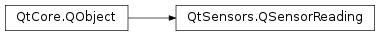

QSensorReading¶
Inherited by: QPressureReading, QDistanceReading, QProximityReading, QAltimeterReading, QRotationReading, QLightReading, QAmbientLightReading, QMagnetometerReading, QAccelerometerReading, QIRProximityReading, QOrientationReading, QLidReading, QTapReading, QGyroscopeReading, QTiltReading, QHolsterReading, QHumidityReading, QAmbientTemperatureReading, QCompassReading
Synopsis¶
Functions¶
- def
setTimestamp(timestamp) - def
timestamp() - def
value(index) - def
valueCount()
Virtual functions¶
- def
copyValuesFrom(other)
Detailed Description¶
The
PySide2.QtSensors.QSensorReadingclass holds the readings from the sensor.Note that
PySide2.QtSensors.QSensorReadingis not particularly useful by itself. The interesting data for each sensor is defined in a sub-class ofPySide2.QtSensors.QSensorReading.
-
PySide2.QtSensors.QSensorReading.copyValuesFrom(other)¶ Parameters: other – PySide2.QtSensors.QSensorReadingCopy values from other into this reading. Implemented by sub-classes using the
DECLARE_READING()andIMPLEMENT_READING()macros.Note that this method should only be called by
PySide2.QtSensors.QSensorBackend.
-
PySide2.QtSensors.QSensorReading.setTimestamp(timestamp)¶ Parameters: timestamp – PySide2.QtCore.quint64Sets the
timestampof the reading.
-
PySide2.QtSensors.QSensorReading.timestamp()¶ Return type: PySide2.QtCore.quint64Returns the timestamp of the reading.
-
PySide2.QtSensors.QSensorReading.value(index)¶ Parameters: index – PySide2.QtCore.intReturn type: object Returns the value of the property at
index.Note that this function is slower than calling the data function directly.
Here is an example of getting a property via the different mechanisms available.
Accessing directly provides the best performance but requires compile-time knowledge of the data you are accessing.
QAccelerometerReading *reading = ...; qreal x = reading->x();
You can also access a property by name. To do this you must call
QObject.property().qreal x = reading->property("x").value<qreal>();
Finally, you can access values via numeric index.
qreal x = reading->value(0).value<qreal>();
Note that can only access properties declared with
Q_PROPERTY()in sub-classes ofPySide2.QtSensors.QSensorReading.See also
PySide2.QtSensors.QSensorReading.valueCount()QObject.property()
-
PySide2.QtSensors.QSensorReading.valueCount()¶ Return type: PySide2.QtCore.intReturns the number of extra properties that the reading has.
Note that this does not count properties declared in
PySide2.QtSensors.QSensorReading.As an example, this returns 3 for
PySide2.QtSensors.QAccelerometerReadingbecause there are 3 properties defined in that class.
© 2018 The Qt Company Ltd. Documentation contributions included herein are the copyrights of their respective owners. The documentation provided herein is licensed under the terms of the GNU Free Documentation License version 1.3 as published by the Free Software Foundation. Qt and respective logos are trademarks of The Qt Company Ltd. in Finland and/or other countries worldwide. All other trademarks are property of their respective owners.